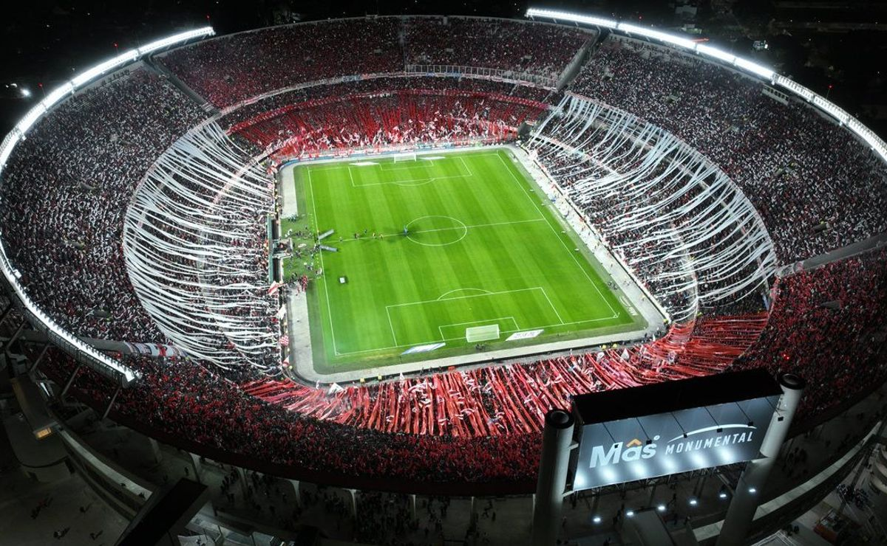

Estadio Monumental
En 1933 Antonio Vespucio Liberti asumió su primera presidencia de River y propuso construir el estadio más grande de Argentina que fungiera como casa del equipo. El 31 de octubre de 1934 compró por 569 mil 403 pesos cerca de 83 mil 950 metros cuadrados de terrenos en el barrio de Núñez El 25 de mayo del 1935 los dirigentes colocaron la primera piedra y al año siguiente, el 27 de septiembre, comenzaron las obras bajo la dirección del estudio Aslan y Ezcurra Arquitectos Primero se edificó la tribuna San Martín, luego la Belgrano y por último la Centenario. Al ser terminada esta última se procedió a inaugurar el Monumental el 26 de mayo de 1938 con el partido River contra Peñarol. El costo total de la obra fue de 4 millones 479 mil 545.80 pesos. Desde sus primeros días, el Estadio Monumental se convirtió en el corazón de la pasión futbolística argentina. La década de 1940 vio a River Plate consolidarse como uno de los clubes más exitosos del país, y su estadio se llenaba regularmente con una hinchada apasionada. El estadio se construyó en varias etapas, y con el tiempo, se realizaron diversas mejoras y renovaciones para adaptarse a las cambiantes necesidades y estándares.
Aunque el proyecto original constaba de cuatro grandes tribunas el dinero para el presupuesto de la construcción se acabó y el Monumental quedó con forma de herradura en sus primeros años. Se decía que la parte abierta del estadio era la ventana al Río de La Plata. La gente pensó que este era el diseño definitivo de la cancha de River que constaba con pista de atletismo pues se había contemplado que en el futuro sirviera como sede de Juegos Olímpicos. Fue hasta 1958 con la venta de Enrique Omar Sívori a la Juventus por 10 millones de pesos, se construyó la cuarta tribuna (Sívori) que se había proyectado en el diseño original, así se completó el estadio y dejó de tener forma de herradura.
En 2014 la dirigencia encabezada por Rodolfo D'Onofrio presentó un proyecto de remodelación para el estadio. El mismo tenía como objetivo la ampliación de la capacidad de espectadores hasta 80 mil localidades. Entre las principales modificaciones, se encontraban el agregado de butacas en las tribunas superiores y la eliminación de la fosa y la pista de atletismo, extendiendo las tribunas bajas hacia el campo de juego. Además, se planeó que la tribuna media en los laterales del estadio se conviertan en una zona exclusiva de palcos en dos niveles y el techado de todas las tribunas. Durante febrero de 2022 la presidencia de River Plate presentó la fase 2. Incluye el trabajo para impermeabilizar las tribunas altas y el cambio de 40 mil butacas. El contará con nuevas tribunas bajas inferiores, 180 palcos, 926 plateas hospitality, restaurante 24/7 y circulación 360° en palcos, tres nuevos niveles de estacionamiento y un nuevo edificio para el Instituto River, entre otras importantes innovaciones. Se construyó un túnel único. Se espera que para 2024 esté toda la obra finalizada, con una capacidad de 84 567. El 16 de agosto de 2023 se presentó el restaurante Banda. Un recinto de lujo de 700 m² en la tribuna Centenario con vista al campo de juego.
Visita el estadio Monumental
Visitar el Estadio Monumental es sumergirse en la grandeza y la historia del fútbol argentino. Este icónico coloso, hogar del Club Atlético River Plate, no es simplemente un campo de juego; es un santuario donde la pasión, la gloria y la tradición se entrelazan en cada rincón. Desde el momento en que pones un pie en sus inmediaciones, sientes la energía que emana de sus muros. La majestuosidad del estadio se hace evidente con cada paso, desde la imponente fachada hasta el rugido de los hinchas que retumba en el aire. El Estadio Monumental no es solo un lugar para ver fútbol; es un monumento vivo que respira el alma de River Plate y de todos aquellos que han caminado por sus pasillos.